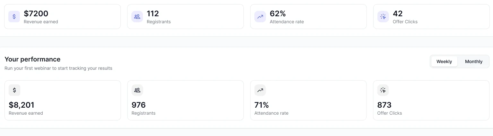

Connecting the many tasks behind a webinar into one coherent journey.
Help hosts navigate creation, preparation, and follow-up without losing event context.
I shaped the dashboard hierarchy, event workflows, UI patterns, and design-system consistency.
A shared workspace connects creation, recent events, configuration, and performance review.
Creating, preparing, promoting, and reviewing a webinar span many different tasks. When every setting carries the same visual weight, the next action becomes difficult to find.
Make the dashboard a reliable starting point for creating an event, resuming work, and understanding performance.
Scenario: an educator or marketer returns to prepare a webinar while balancing content, audience communication, and a deadline.
A clear event summary is more useful than a long list of disconnected settings.
Are the schedule, pages, presenters, and messages aligned? Which event should I work on next?
Creates an event, revisits setup, manages audience touchpoints, and returns to results or replay.
Uncertainty can rise as delivery approaches. Visible status and contextual actions can support a sense of control.
Surface the next action, preserve event context, and separate preparation from performance review.
Scenario-based empathy map: user needs and feelings are hypotheses for validation.
The decisions behind Create, Resume, and Review.
The dashboard’s organizing logic is simple: start something new, return to work in progress, or understand what happened.
Separate creating an event, preparing it, engaging an audience, and reviewing results. The dashboard must orient the host across this lifecycle.
Output / task modelKeep product-wide destinations in the sidebar, creation routes on Home, and detailed setup inside each webinar. This prevents the dashboard from becoming a settings directory.
Output / workspace & event hierarchyUse explicit format choices for starting, recent webinars for returning, and a distinct performance area for reviewing. Each region answers a different user intention.
Output / content hierarchyRepeat card anatomy, align metric values with labels, and reserve violet for interactive emphasis. Consistency helps dense information remain scannable.
Output / interface patternsA host’s goal evolves from getting an event ready to understanding its value. The journey below connects the task, potential friction, and design response at each stage.
| Journey layer | Start | Prepare | Promote & engage | Review & reuse |
|---|---|---|---|---|
| Goal | Choose the right event format. | Feel ready to deliver. | Connect with the right audience. | Understand the outcome and next step. |
| Actions | Select a format; create a webinar. | Set schedule, pages, content, and presenters. | Configure notifications and audience actions. | Review performance; manage replay or reuse. |
| Potential friction | Uncertainty about where to begin. | Readiness spread across several settings. | Missing a communication or engagement step. | Results disconnected from future action. |
| Likely mindset | Curious, but needs direction. | Focused; checking for omissions. | Attentive to timing and coordination. | Reflective; looking for useful signals. |
| Design response | Visible creation choices on Home. | An event overview and grouped setup tabs. | Consistent rows with timing, state, and actions. | Performance cards and replay routes. |
Scenario-based journey: questions and friction points are hypotheses for validation.
I gave the individual webinar a dedicated overview. Summary information helps the host re-establish context before moving into detailed configuration.
Tradeoff: more configuration areas remain visible in the event navigation. Grouping by task keeps that depth structured.
Group configuration around the event, with an overview before detailed settings.
A host can lose context when a long settings list becomes the starting point.
The summary restores orientation; task-based tabs preserve access to deeper controls.
For engagement and notifications, I used repeated rows instead of independent control groups. Alignment makes timing, state, and actions easier to compare across items.
Row actions sit beside the item they affect; the add action operates at the list level.
White and pale neutral backgrounds keep configuration labels and controls more prominent than decoration.
I designed EasyWebinar AI to help hosts turn an idea into the assets around a webinar—registration and thank-you pages, emails, polls, a script, and offers—in one connected workspace.
From configuring each asset separately to preparing a coordinated webinar through conversation.
Share the topic, audience, and goal.
Guide the direction through focused choices.
Prepare the supporting webinar assets.
Inspect, edit, and prepare for launch.
A free-text prompt gives experienced hosts flexibility. Suggested tasks—create a webinar, write a script, design a registration page, or generate polls—make the capabilities visible to someone starting for the first time.
A searchable conversation list provides a way back to earlier work. The assistant sits within the familiar product shell, connecting AI creation to the wider webinar workspace.
I paired natural-language conversation with structured answer choices. A host can select an audience or tone instead of composing a detailed instruction from scratch, while a custom-answer route preserves flexibility.
The tradeoff: suggestions make decisions easier, but must leave room for an audience or voice that doesn’t fit a preset.
The AI capability extends across the attendee journey. The design goal is to carry the host’s topic, audience, and tone into each asset rather than making every piece a separate starting point.
Introduce the promise and invite sign-ups.
Confirm registration and set expectations.
Support promotion, reminders, and follow-up.
Give the host a foundation for delivery.
Prepare audience participation.
Connect the webinar to a relevant next action.
The split workspace keeps the host’s instructions beside the generated page. Device previews, “Edit in Builder,” and “Save Changes” make the output something the host can inspect and refine.
A compact assistant panel supports actions such as adjusting a schedule, adding a session, updating pricing, or inviting a moderator. This extends AI beyond content generation into ongoing webinar management.
Conversation offers a common entry point, guided answers help define intent, and connected previews keep creation close to review. The intended benefit is a shorter path from idea to launch, with the host retaining the final editorial decision.
The four Figma screens show the starting workspace, guided conversation, registration-page review, and contextual assistant. Faster preparation is the product goal; no measured time-saving or conversion uplift is claimed here.
Violet identifies interactive emphasis and selection. The dark navigation creates a stable edge; neutral surfaces leave room for dense product content.
Visual-system study based on the product screens; color values are approximate.
Metric cards share alignment and proportion, with a prominent value above its supporting label. Repetition gives the dashboard a consistent reading rhythm.

The final design connects event creation, setup, communications, and review through shared navigation and UI patterns. A useful next evaluation is whether a returning host can identify the next preparation task without searching through settings.
From the first event to the details behind it—a selection of the work across EasyWebinar.
A home for every event
Create, resume, and review
Shape the complete event experience
Manage the next audience action
Keep event communications connected
A structured view of registrants
Connect the wider workflow
Keep reusable assets within reach
Select any screen to view it at a larger size.